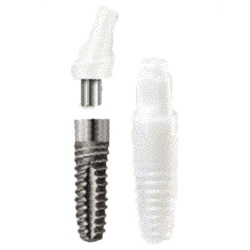
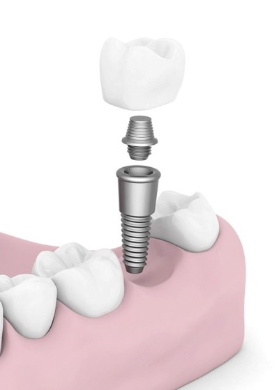
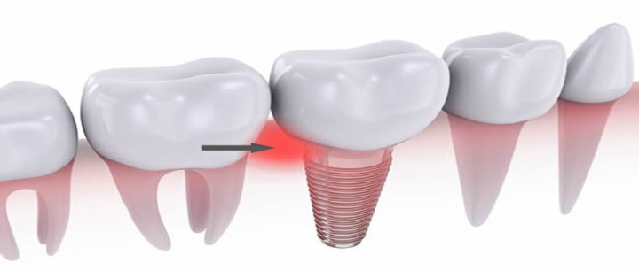

علاج وزراعة الأسنان
تعرَّف من خلال مقالاتنا على أحدث تقنيات علاج الأسنان، وأنجح الأساليب الوقائية للتمتع بأسنان صحيَّة قويَّة، إضافة إلى عمليات زراعة الأسنان، والجسور، والتقويم، وغيرها من المعلومات المتنوعة

انواع زارعة الأسنان في تركيا مراحلها ومميزاتها
قد تسبب لنا الأسنان المكسورة أو المنحرفة حالة ارتباك في بعض الأحيان، لدرجة أننا قد نخجل من إظهار ابتسامتنا، لكن علينا أن ندرك جيداً أن عملية زراعة الأسنان في تركيا قد تطورت بشكل كبير خلال السنوات الأخيرة، وبالتالي بات هناك حلول طبية تعيد لنا أسناننا إلى سابق عهدها، وتصلح أي تشوه وانحراف في ترتيب الأسنان، باستخدام أجهزة ومواد طبية حديثة ومتعددة.
جدول المحتويات
مراحل عملية زراعة الأسنان في تركيا
تتم عملية زراعة الأسنان على النحو التالي:
- أثناء زراعة الأسنان، يقوم الجراح بإجراء شق جراحي لفتح اللثة وكشف العظم. حيث يتم حفر ثقوب في العظام، ووضع زرعة الأسنان المعدنية. فالزرعة ستكون بمثابة جذر السن، لذا يتم زرعها في عمق العظم.
- بمجرد وضع الزرعة المعدنية في عظم الفك، يبدأ التحام العظم بالزرعة، ينمو عظم الفك، ويتحد مع سطح زرعة الأسنان. وتساعد هذه العملية التي قد تستغرق عدة أشهر، في توفير قاعدة صلبة لسنك الصناعي الجديد، كما تفعل جذور أسنانك الطبيعية تماماً.
- وضع الدعامة.
عند اكتمال الالتحام العظمي، قد تحتاج إلى عملية جراحية إضافية لوضع الدعامة (القطعة التي سيعلق عليها التاج في النهاية). وعادة ما تتم هذه الجراحة البسيطة مع تخدير موضعي في العيادات الخارجية.
لوضع الدعامة لا بد من أن:
- يعيد الجراح فتح اللثة لكشف زرعة الأسنان.
- يتم وضع الدعامة على زرعة الأسنان.
- ثم يتم إغلاق اللثة حول الدعامة، وليس أعلاها.
بعد وضع الدعامة، يجب أن تلتئم اللثة لمدة أسبوعين تقريباً، وذلك قبل تثبيت السن الصناعي.
تعرف على : عملية زراعة الاسنان بالتفصيل- ميزاتها و كيف تتم?
أنواع زراعة الأسنان في تركيا
- زرعة الأسنان الزركونيا: تتمتع الزركونيا بمرونة أقل، والتي يمكن أن تؤدي إلى كسور دقيقة أكثر، ولكنها صلبة للغاية وقوية أيضاً.
- زرعة الأسنان التيتانيوم: زراعة الأسنان التيتانيوم قوية للغاية، وتتميز بالصلابة، ولها خصائص انثناء عالية، ومقاومة للكسر، ومصنوعة من المعدن، ويعتبر التيتانيوم أكثر مواد زراعة الأسنان شيوعاً.

زراعة الأسنان في يوم واحد في تركيا
زراعة الأسنان في يوم واحد وتسمى الزراعة الفورية للأسنان هي زرعة الأسنان التي يتم وضعها في عظم الفك مباشرة بعد قلع الأسنان. عادةً ما يتم وضعها في نفس الزيارة التي يتم فيها قلع الأسنان، لكن يمكن إجراؤها في غضون أسبوعين بعد خلع الأسنان، ويمكن اعتبارها عملية زرع أسنان فورية كذلك.


اقرأ أكثر : ميزات وعيوب زراعة الأسنان الفورية " في يوم واحد " في تركيا
زرع الأسنان بدون جراحة في تركيا
هذه الجراحة هي ما تعرف بالجراحة الموجهة، أو العمليات الجراحية البسيطة، ويتوجب على عيادات الأسنان أن يكون لديها تقدم تقني يتيح وضع الزرعة دون إجراء أي شق أو انفصال باللثة.
في عمليات جراحة الزرع الموجَّه تستخدم بيانات التصوير المقطعي لفحص موضع الجراحة والتخطيط المسبق لها، وبما أن التكنولوجيا توفر الدقة الكاملة، فإن جراحة الزرع الموجه تتيح الاستفادة من الفوائد التالية:
- جراحة دقيقة وآمنة، ويمكن التنبؤ بها.
- وقت عمل أقصر.
- وقت شفاء أقصر.
- لا يلزم الشق أو الغرز، مما يؤدي إلى إجراء أكثر راحة للمريض.
- نزيف أقل بعد العملية.
- يمكن وضع التعويضات الصناعية فوراً.

اسباب عملية زراعة الاسنان
- تحسين الكلام من أحد المزايا في عملية الزرع، حيث إنه مع أطقم الأسنان سيئة التركيب، يمكن للأسنان الانزلاق داخل فمك، مما يؤدي إلى غمغمة كلماتك. أما عملية زراعة الأسنان تسمح لك بالتحدث دون قلق من انزلاق الأسنان.
- تسهيل تناول الطعام من مزايا عملية زراعة الأسنان، إذ تسمح لك زراعة الأسنان بأكل الأطعمة المفضلة لديك.
- ومن مزايا عملية زرع الأسنان كونه مناسباً ومريحاً، فزراعة الأسنان تلغي الإحراج المتمثل في إزالة أطقم الأسنان.
- زراعة الأسنان تعطي إحساساً أكثر بالراحة.
- عملية الزراعة تعمل على تحسين المظهر.
- تزيد زراعة الأسنان الثقة بالنفس.
- تساعد على تحسين صحة الفم
- المتانة والصلابة.
التهاب اللثة بعد زراعة الاسنان
يمكنك تجنب الالتهابات التي من الممكن أن تحصل في محيط الزرعة تماماً، وذلك من خلال ممارسة تنظيف الأسنان بالفرشاة والخيط يومياً حول جميع أسنانك، بما في ذلك الزرعة، ورؤية طبيب الأسنان على الأقل مرتين في السنة، لإجراء عمليات التنظيف والفحوصات.
المضمضة بعوامل مضادة للميكروبات ضرورية أيضاً للوقاية من الالتهابات، وكذلك يجب استخدام المضادات الحيوية الموضعية أسفل اللثة وفي الجيوب، التي تشكل عمقاً أكبر في العظم.
إقرأ اكثر : عملية زراعة اللثة ماهي؟ وكيف تتم؟

مخاطر زراعة الاسنان
تسبب جراحة زراعة الأسنان بعض المخاطر الصحية والمشاكل النادرة الحدوث، شأنها شأن أي عملية جراحية أخرى، ومع ذلك عندما تحدث بعض المخاطر فإنها عادة ما تكون بسيطة، ويمكن علاجها بسهولة. وهي تشمل ما يلي:- الالتهاب في موقع الزرع.
- إصابة أو ضرر الهياكل المحيطة، مثل الأسنان الأخرى أو الأوعية الدموية.
- ضرر الأعصاب، والذي يمكن أن يسبب الألم أو التنميل أو الخدر في أسنانك الطبيعية أو لثتك أو شفتيك أو ذقنك.
- مشاكل الجيوب الأنفية، خاصة عند وضع زرعة الأسنان في الفك العلوي قد تخترق أحد الجيوب الأنفية.
يمكننا من خلال تواصلكم معنا تقييم حالة الزرعة وإعداد أفضل خطة علاجية وبأسعار مناسبة.
عروض زراعة الأسنان في تركيا 2021
سؤال وجواب لعملية زراعة الأسنان
عملية زراعة الأسنان هي عملية جراحية، تستغرق عملية وضع غرسة زراعة الأسنان بين الساعة والساعتين حسب تعقيد الحالة، وتستغرق لاحقاً من 3-6 شهور حتى الوصول إلى النتائج المرجوة.
قد تدوم زراعة الأسنان مدى الحياة، إذا تم إجراؤها على أيدي أطباء ذي كفاءة عالية، وإذا تم توفير الظروف المناسبة لها من الاهتمام بنظافة الفم والصحة العامة.
زراعة الأسنان هي عملية استعادة دائمة للأسنان، تجعلها أكثر جمالية، وهي أسهل للحفاظ عليها، غير ضارة باللثة والعظام، وعمرها أطول.
عملية زراعة الأسنان ناجحة للغاية بالنسبة للغالبية العظمى من المرضى، والذين يتمتعون بصحة جيدة، وعندما يتم إجراؤها بواسطة أخصائي مؤهل بشكل مناسب.
زراعة الأسنان لا تختلف كثيراً عن عمليات الخلع والحشو؛ ولذا ليست هناك مشكلة على الإطلاق، ولكن أطباء الأسنان يفضلون تأجيل زراعة الأسنان لبعد الولادة.
تعتبر زراعة الأسنان إجراءً آمناً، ولكن كأي إجراء آخر قد تحدث بعض المضاعفات مثل: • الالتهابات في موقع الزراعة. • إصابة أو تلف في الهياكل المحيطة، مثل الأسنان الأخرى أو الأوعية الدموية. • الألم أو التنميل أو الوخز في الأسنان أو اللثة أو الشفة أو الذقن، بسبب إصابة أو تلف الأعصاب المحيطة.
تشبه عملية زراعة الأسنان بالليزر عملية زراعة الأسنان التقليدية، إلا أن زرعة الأسنان بالليزر تعتمد على الليزر في إحداث الشق الجراحي لفتح اللثة، وكشف العظم بشكل أدق.
نعم، إذا كانت نسبة السكر في الدم منتظمة، وصحة اللثة والعظام جيدة، وفي حال كان السكر غير منتظم يجب مراجعة الطبيب المختص، لتنظيم معدلات السكر قبل إجراء عملية زراعة الأسنان.
ينصح بتجنب زراعة الأسنان قبل اكتمال نمو عظام الفكين، أي 18 سنة.
تظهر نتائج زراعة الأسنان بعد 3-6 شهور، وقد تستمر لمدى الحياة في حال الحفاظ على صحة الجسم بشكل عام، والفم ونظافة وصحة الأسنان بشكل خاص.
اطلع على أحدث المنشورات والأخبار الطبية
عمليات شفط الدهون بالفيزر في تركيا والأسعار 2021
يعتبر شفط الدهون بالفيزر من أفضل عمليات علاج السمنة المفرطة. تعرف معنا على مميزات وعيوب شفط الدهون بالفيزر وكيف تتم العملية وشاهد الفرق قبل وبعد في تركيا.
طرق علاج طول النظر في تركيا وأحدث التقنيات
يعاني الكثير من كبار السن وحتى البالغين من مرض طول النظر . سنتحدث في هذا المقال عن كيفية علاج طول النظر وأسباب هذا المرض ونسبة نجاح العلاج .
الفرق بين زراعة الشعر في ايران وتركيا 2021
بالرغم من أن أسعار زراعة الشعر بين تركيا وايران لا تختلف كثيرا إلا أن هنالك الكثير من الفروق التي قد تحدد لك الدولة الأفضل لزراعة الشعر فيها.
طرق علاج قصر النظر في تركيا وأحدث التقنيات
يعاني الكثير من الأطفال وحتى البالغين من مرض قصر النظر. سنتعرف في هذا المقال على أفضل طرق علاج قصر النظر وأسباب هذا المرض ونسبة نجاح العلاج .